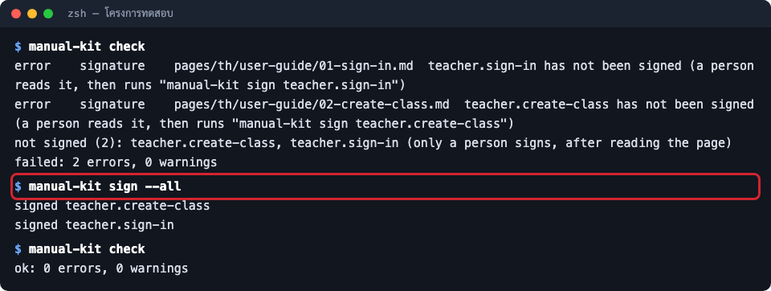

ส่งมอบคู่มือให้ลูกค้า
อ่านทวน กรอก (รอระบุ) รับรองหน้า ตรวจ PDF และเปิดไฟล์ Word จริงหนึ่งครั้ง ก่อนส่งลูกค้า
- สำหรับ
- ทีมที่ทำคู่มือ หัวหน้าทีม / PM
Claude ทำคู่มือเสร็จแล้ว แต่ยังส่งลูกค้าไม่ได้จนกว่า คน จะอ่านทวนและรับรอง เพราะคู่มือคือคำสัญญาต่อลูกค้าว่าระบบทำงานแบบนี้ คนที่รู้จักลูกค้าต้องเป็นคนยืนยัน manual-kit จึงไม่ยอมให้ Claude หรือ CI รับรองแทน หน้านี้คือเช็กลิสต์ก่อนส่ง
ก่อนเริ่ม
- Claude รายงานว่าทำคู่มือเสร็จ และมีไฟล์ใน
manual/dist/ - มีเวลาอ่านทุกหน้า (คู่มือ 10 หน้าราวครึ่งชั่วโมง)
ขั้นตอน
- อ่านทุกหน้า ในเว็บคู่มือจะอ่านง่ายที่สุด: พิมพ์ใน Claude Code ว่า
! manual-kit preview(คำสั่ง preview เปิดเว็บคู่มือบนเครื่องตัวเองที่ 127.0.0.1 กด Ctrl-C เพื่อปิด) ดูทั้งข้อความ ภาพ และขั้นตอนว่าตรงกับระบบจริงไหม ถ้าอยากเห็นหน้าเว็บที่ขนาดจอต่าง ๆ ใช้ snap เช่นmanual-kit snap manual/dist/web/index.html --width 1280,390จะได้ภาพเต็มหน้าที่ความกว้างจอคอมและมือถือ

- กรอก
(รอระบุ)ให้ครบ ค้นทั้งโฟลเดอร์manual/ส่วนใหญ่อยู่ในmanual/manual.config.yamlหัวข้อdocument(ลูกค้า เลขที่เอกสาร ระดับชั้นความลับ ผู้อนุมัติ ช่องทางติดต่อ) แก้เองหรือบอก Claude ก็ได้ - ปัญหาของระบบ ที่ Claude รายงาน ให้ส่งต่อทีมพัฒนา อย่าเขียนลงคู่มือเหมือนเป็นฟีเจอร์
- รับรองหน้า หลังอ่านครบ พิมพ์ใน Claude Code ว่า
! manual-kit sign --allหรือระบุรหัสหน้าที่อ่านแล้ว เช่น! manual-kit sign teacher.sign-in(เครื่องหมาย!ทำให้คำสั่งรันในนามของคุณ ไม่ใช่ของ Claude) คำสั่ง sign บันทึกลายนิ้วมือของหน้าและไฟล์ต้นทางลงmanual/manual.lock.jsonภาพด้านล่างเป็นผลจริงบนโครงการทดสอบ: ก่อนรับรอง check ไม่ผ่าน หลังรับรองผ่าน

-
ถ้าแก้หน้าหลังรับรอง ให้ Claude สร้างไฟล์ใหม่ (
/manualหรือบอกว่า "build ใหม่") แล้วรับรองหน้าที่แก้อีกครั้ง -
เปิด PDF ดูทุกหน้า: ปก ข้อมูลเอกสาร สารบัญมีเลขหน้า ภาพไม่ขาด
-
เปิดไฟล์ Word ใน Microsoft Word จริงหนึ่งครั้ง ตรวจฟอนต์ไทยและสารบัญ ถ้า Word ถามว่าจะอัปเดตฟิลด์ไหม ให้ตอบตกลง สารบัญจะได้เลขหน้า การดูด้วย Quick Look หรือภาพตัวอย่างไม่พอ เพราะไม่ได้จัดหน้าแบบ Word
-
ส่งลูกค้า: PDF สำหรับอ่านและพิมพ์ ไฟล์ Word ถ้าลูกค้าต้องแก้ต่อ เว็บคู่มือถ้ามีที่วาง
ข้อควรระวัง
อย่าสั่งให้ Claude รับรองแทน และอย่าเปิดให้ CI รัน sign การรับรองคือหลักฐานว่าคนอ่านแล้ว ถ้าเครื่องทำแทน หลักฐานนั้นไม่มีความหมาย
ผลลัพธ์ที่ได้
manual-kit check ผ่านโดยไม่ต้องใช้ --allow-unsigned ไฟล์ PDF และ Word ใน manual/dist/ พร้อมส่ง
และ commit manual/ ทั้งโฟลเดอร์ (รวม manual.lock.json) ไว้กับโค้ด
ปัญหาที่พบบ่อย
| อาการ | สาเหตุ | วิธีแก้ |
|---|---|---|
| ไฟล์ Word สารบัญไม่มีเลขหน้า | เครื่องที่ build ไม่มี LibreOffice เลขหน้าเกิดได้หลัง Word จัดหน้าเท่านั้น | เปิดใน Word แล้วอัปเดตสารบัญ หรือติดตั้ง LibreOffice แล้วสั่งทำ Word ใหม่ |
... changed since it was signed |
หน้าหรือไฟล์ต้นทางของหน้าเปลี่ยนหลังรับรอง | อ่านหน้านั้นอีกครั้ง แล้วรับรองใหม่ |
| อยากให้ Claude เปิด Word ให้อัตโนมัติ | manual-kit ไม่ใช้ Word อัตโนมัติ เพราะเคยค้างที่กล่องข้อความของ Word | เปิดเองหนึ่งครั้ง |